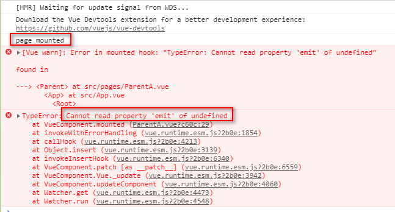
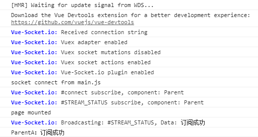
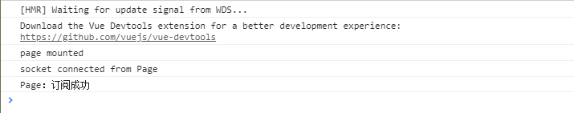
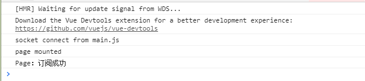

全手打原创，转载请标明出处：https://www.cnblogs.com/dreamsqin/p/12018866.html，多谢，=。=~
（如果对你有帮助的话请帮我点个赞啦）
请先允许我狠狠吐个槽：vue-socket.io相关中文博客实在太少太少，来来去去就那么几篇，教程也比较零散，版本也比较老，就算我有暴风式搜索还是找不到解决问题的方案，然后我怒了，开始看源码、写测试demo、几乎把相关的issues都看了一遍，折腾1天后终于。。。搞定了，下面总结一下~
vue-socket.io其实是在socket.io-client基础上做了一层封装，将$socket挂载到vue实例上，同时你可以使用sockets对象轻松实现组件化的事件监听，让你在vue项目中使用起来更方便。我目前用的vue-socket.io:3.0.7，可以在其package.json中看到它依赖于socket.io-client:2.1.1。
websocket连接地址是从后端动态获取，所以导致页面加载时VueSocketIO实例还未创建，页面中通过this.$socket.emit发起订阅报错，同时无法找到vue实例的sockets对象（写在内部的事件将无法监听到，就算后面已经连接成功）
如果你的websocket连接地址是静态的（写死的），可以只看使用教程，如果你跟我遇到了同样的问题，那就跳跃到解决方案
console报错如下：

先抛开可能遇到的问题，按照官网的教程我们走一遍：
npm install vue-socket.io --save
import Vue from 'vue'
import store from './store'
import App from './App.vue'
import VueSocketIO from 'vue-socket.io'
Vue.use(new VueSocketIO({
debug: true,
connection: 'http://metinseylan.com:1992',
vuex: {
store,
actionPrefix: 'SOCKET_',
mutationPrefix: 'SOCKET_'
},
options: { path: "/my-app/" } //Optional options
}))
new Vue({
router,
store,
render: h => h(App)
}).$mount('#app')debug：生产环境建议关闭，开发环境可以打开，这样你就可以在控制台看到socket连接和事件监听的一些信息，例如下面这样：

connection：连接地址前缀，注意！这里只有前缀，我之前被坑过，因为明明后端有给我返回上下文，但莫名其妙的被去除了，vue-socket.io这里用到的是socket.io-client的Manager api，关键源码如下（只看我写中文备注的部分就好）：
vue-socket.io（index.js）
import SocketIO from "socket.io-client";
export default class VueSocketIO {
/**
* lets take all resource
* @param io
* @param vuex
* @param debug
* @param options
*/
constructor({connection, vuex, debug, options}){
Logger.debug = debug;
this.io = this.connect(connection, options); // 获取到你设定的参数后就调用了connect方法
this.useConnectionNamespace = (options && options.useConnectionNamespace);
this.namespaceName = (options && options.namespaceName);
this.emitter = new Emitter(vuex);
this.listener = new Listener(this.io, this.emitter);
}
/**
* registering SocketIO instance
* @param connection
* @param options
*/
connect(connection, options) {
if (connection && typeof connection === "object") {
Logger.info(`Received socket.io-client instance`);
return connection;
} else if (typeof connection === "string") {
const io = SocketIO(connection, options);// 其实用的是socket.io-client的Manager API
Logger.info(`Received connection string`);
return (this.io = io);
} else {
throw new Error("Unsupported connection type");
}
}socket.io-client（index.js）
var url = require('./url');
function lookup (uri, opts) {
if (typeof uri === 'object') {
opts = uri;
uri = undefined;
}
opts = opts || {};
var parsed = url(uri); // 通过url.js对connection前缀进行截取
var source = parsed.source;
var id = parsed.id;
var path = parsed.path;
var sameNamespace = cache[id] && path in cache[id].nsps;
var newConnection = opts.forceNew || opts['force new connection'] ||
false === opts.multiplex || sameNamespace;
var io;
if (newConnection) {
debug('ignoring socket cache for %s', source);
io = Manager(source, opts);
} else {
if (!cache[id]) {
debug('new io instance for %s', source);
cache[id] = Manager(source, opts);
}
io = cache[id];
}
if (parsed.query && !opts.query) {
opts.query = parsed.query;
}
return io.socket(parsed.path, opts);// 实际调用的是解析后的前缀地址
}options.path： 这里就可以填websocket连接地址的后缀，如果不填会被默认添加/socket.io，关键源码如下（只看我写中文备注的部分就好）：options配置可以参见https://socket.io/docs/client-api/#Managersocket.io-client（manager.js）
function Manager (uri, opts) {
if (!(this instanceof Manager)) return new Manager(uri, opts);
if (uri && ('object' === typeof uri)) {
opts = uri;
uri = undefined;
}
opts = opts || {};
opts.path = opts.path || '/socket.io'; // 看到没有，如果你不传递options.path参数的话会被默认安一个尾巴"/socket.io"
this.nsps = {};
this.subs = [];
this.opts = opts;
this.reconnection(opts.reconnection !== false);
this.reconnectionAttempts(opts.reconnectionAttempts || Infinity);
this.reconnectionDelay(opts.reconnectionDelay || 1000);
this.reconnectionDelayMax(opts.reconnectionDelayMax || 5000);
this.randomizationFactor(opts.randomizationFactor || 0.5);
this.backoff = new Backoff({
min: this.reconnectionDelay(),
max: this.reconnectionDelayMax(),
jitter: this.randomizationFactor()
});
this.timeout(null == opts.timeout ? 20000 : opts.timeout);
this.readyState = 'closed';
this.uri = uri;
this.connecting = [];
this.lastPing = null;
this.encoding = false;
this.packetBuffer = [];
var _parser = opts.parser || parser;
this.encoder = new _parser.Encoder();
this.decoder = new _parser.Decoder();
this.autoConnect = opts.autoConnect !== false;
if (this.autoConnect) this.open();
}vuex： 配置后可以在store.js的mutations或者actions监听到Vue-Socket.io事件（例如：connect、disconnect、reconnect等），这部分目前用得比较少，也挺简单，如果有疑问可以给我留言我再单独提供教程。
socket.io-client的应该知道，默认情况下，websocket在创建实例的时候就会自动发起连接了，所以切记不要在组件中重复发起连接。如果你想自己控制发起连接的时机可以将options.autoConnect设置为false。export default {
name: 'Page',
sockets: {// 通过vue实例对象sockets实现组件中的事件监听
connect: function () {// socket的connect事件
console.log('socket connected from Page')
},
STREAM_STATUS(data) {// 后端按主题名推送的消息数据
console.log('Page：' + data)
}
},
mounted() {
console.log('page mounted')
this.$socket.emit('STREAM_STATUS', { subscribe: true })// 在页面加载时发起订阅，“STREAM_STATUS”是你跟后端约定好的主题名
}
}事件除了在sockets对象中默认监听，你还可以在外部单独注册事件监听或取消注册：
this.sockets.subscribe('EVENT_NAME', (data) => {
this.msg = data.message;
});
this.sockets.unsubscribe('EVENT_NAME');但这种方式从源码上看是不支持参数传递的，只支持传递事件名及回调函数（部分源码如下）：
vue-Socket.io（mixin.js）
beforeCreate(){
if(!this.sockets) this.sockets = {};
if (typeof this.$vueSocketIo === 'object') {
for (const namespace of Object.keys(this.$vueSocketIo)) {
this.sockets[namespace] = {
subscribe: (event, callback) => {
this.$vueSocketIo[namespace].emitter.addListener(event, callback, this);
},
unsubscribe: (event) => {
this.$vueSocketIo[namespace].emitter.removeListener(event, this);
}
}
}
} else {
this.$vueSocketIo.emitter.addListener(event, callback, this);
this.$vueSocketIo.emitter.removeListener(event, this);
}
}针对我上面描述的问题，最大原因就在于获取socket连接地址是异步请求，如文章开头的截图，page mounted打印时，this.$socket还是undefined。所以我们要做的就是怎么样让页面加载在VueSocketIO实例创建之后。
我提供两种解决方案，具体怎么选择看你们的需求~
缺点：如果你获取socket地址的请求失败了，整个项目的页面都加载不出来（一般服务器出现问题才会有这种情况产生）
优点：实现简单，一小段代码挪个位置就好
import Vue from 'vue'
import App from './App.vue'
import router from './router'
import store from './store'
import ParentApi from '@/api/Parent'
import VueSocketIO from 'vue-socket.io'
/* 使用vue-socket.io */
ParentApi.getSocketUrl().then((res) => {
Vue.use(new VueSocketIO({
debug: false,
connection: res.data.path,
options: { path: '/my-project/socket.io' }
}))
new Vue({
router,
store,
render: h => h(App)
}).$mount('#app')
})控制台打印如下图：

原理：异步请求回调中创建VueSocketIO实例并监听connect事件，监听回调中修改isSuccessConnect参数的值，在Page页面路由中增加beforeEnter守卫，利用setInterval周期性判断isSuccessConnect的值，满足条件则取消定时执行并路由跳转。
缺点：实现起来稍微复杂一点
优点：不会影响其他页面的加载
import Vue from 'vue'
import App from './App.vue'
import router from './router'
import store from './store'
import ParentApi from '@/api/Parent'
import VueSocketIO from 'vue-socket.io'
ParentApi.getSocketUrl().then((res) => {
let vueSocketIo = new VueSocketIO({
debug: false,
connection: res.data.path,
options: { path: '/my-project/socket.io' }
})
// 监听connect事件，设置isSuccessConnect为true
vueSocketIo.io.on('connect', () => {
console.log('socket connect from main.js')
store.commit('newIsSuccessConnect', true)
})
Vue.use(vueSocketIo)
})
new Vue({
router,
store,
render: h => h(App)
}).$mount('#app')import Vue from 'vue'
import Vuex from 'vuex'
Vue.use(Vuex)
export default new Vuex.Store({
state: {
// socket连接状态
isSuccessConnect: false
},
mutations: {
newIsSuccessConnect(state, value) {
state.isSuccessConnect = value
}
},
getters: {
getIsSuccessConnect: state => {
return state.isSuccessConnect
}
},
actions: {
}
})import Vue from 'vue'
import Router from 'vue-router'
import store from './store'
Vue.use(Router)
export default new Router({
mode: 'history',
base: process.env.BASE_URL,
routes: [
{
path: '/page',
name: 'Page',
component: () => import(/* webpackChunkName: "Page" */ './pages/Page.vue'),
beforeEnter: (to, from, next) => {
let intervalId = setInterval(() => {
// 直到store中isSuccessConnect为true时才能进入/page
if (store.getters.getIsSuccessConnect) {
clearInterval(intervalId)
next()
}
}, 500)
}
}
]
})控制台打印如下图：

1、vue-socket.io：https://github.com/MetinSeylan/Vue-Socket.io
2、socket.io-client：https://github.com/socketio/socket.io-client
3、vue-router守卫：https://router.vuejs.org/zh/guide/advanced/navigation-guards.html#%E8%B7%AF%E7%94%B1%E7%8B%AC%E4%BA%AB%E7%9A%84%E5%AE%88%E5%8D%AB